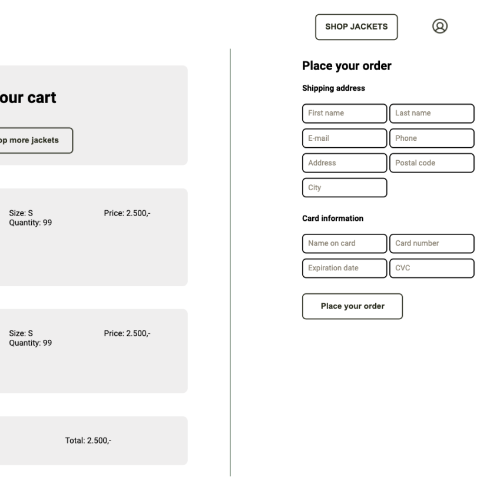
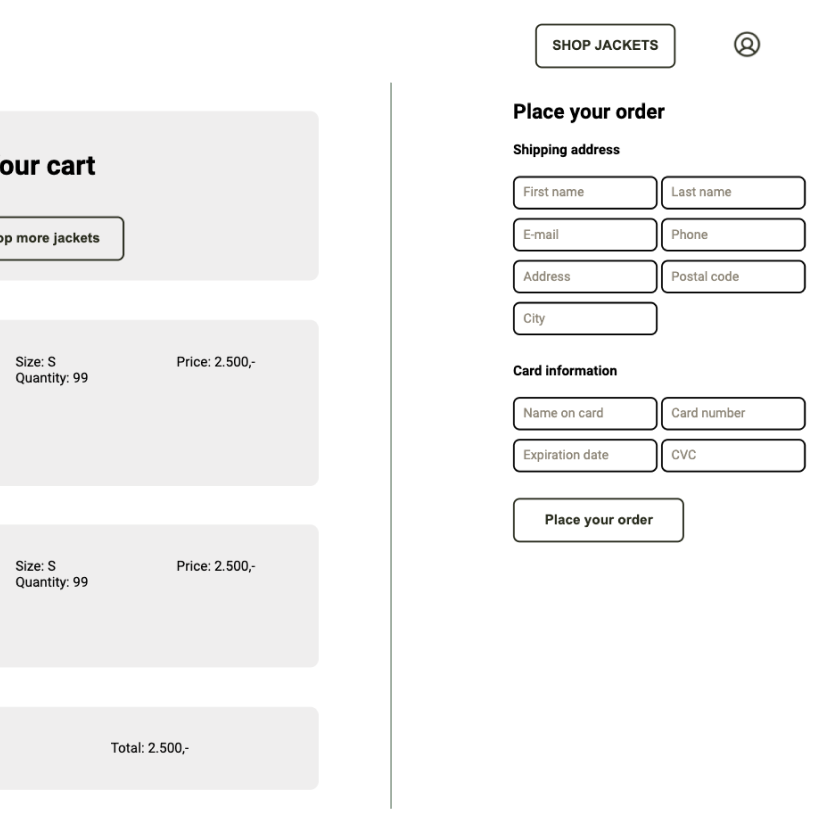

Rainy Days
The project
This project was my very first design- and coding assignment.
The task was to create a website that sells jackets for outdoor
activities, such as hiking.
As you will see, I started with making the low- and highfidility
design,
and then completely changed the design later.


 
